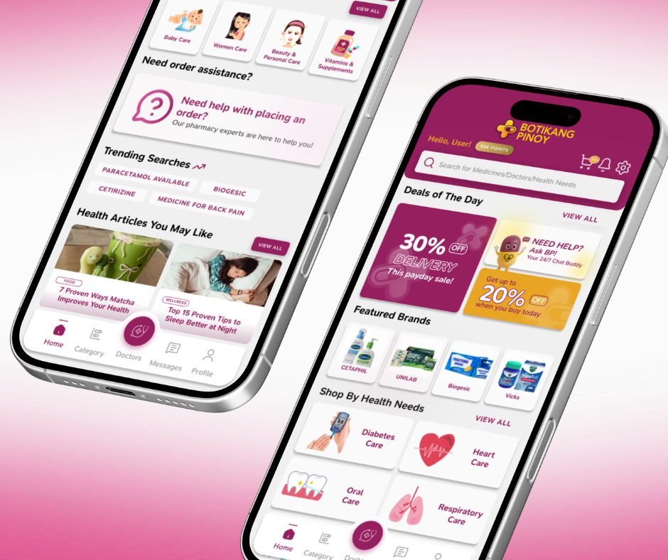
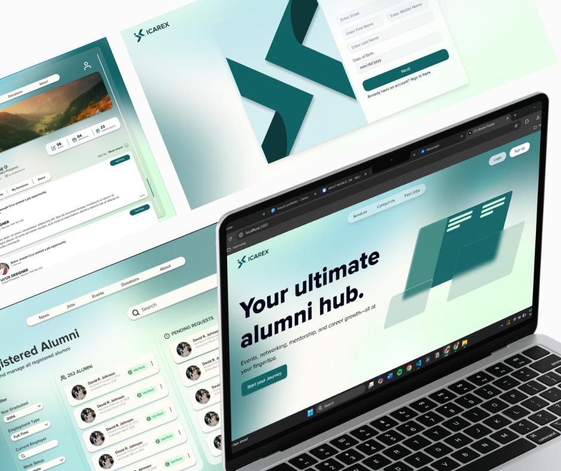
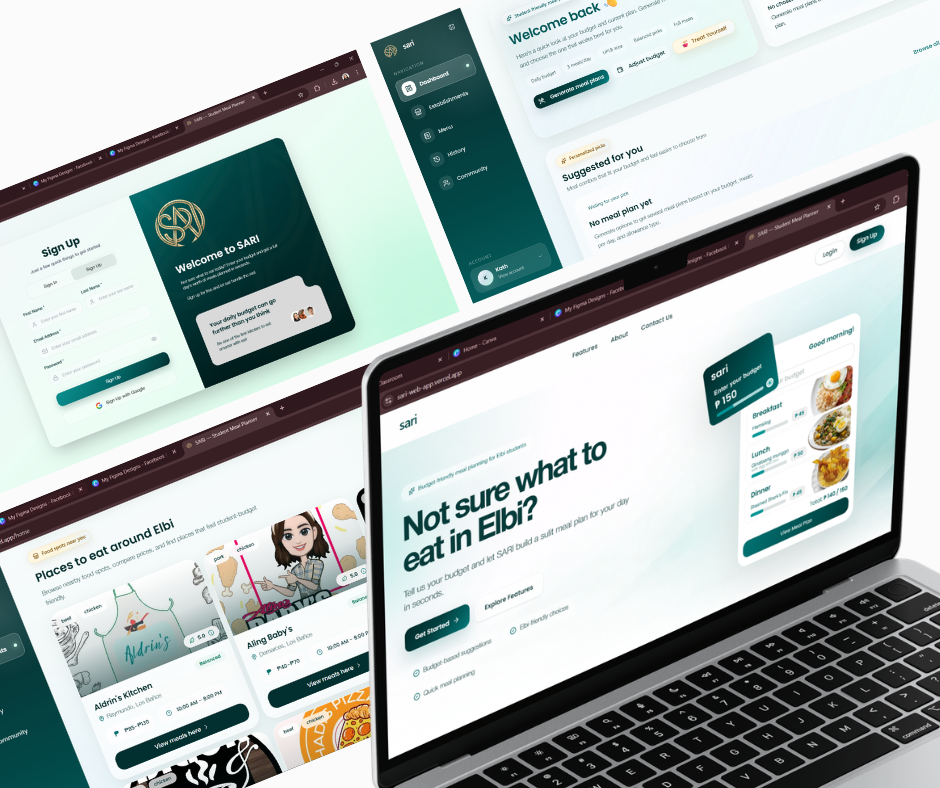
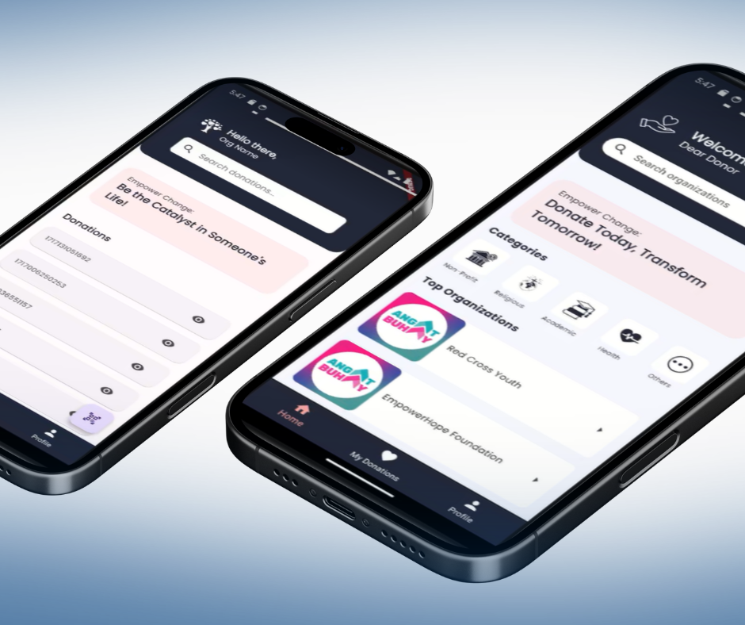
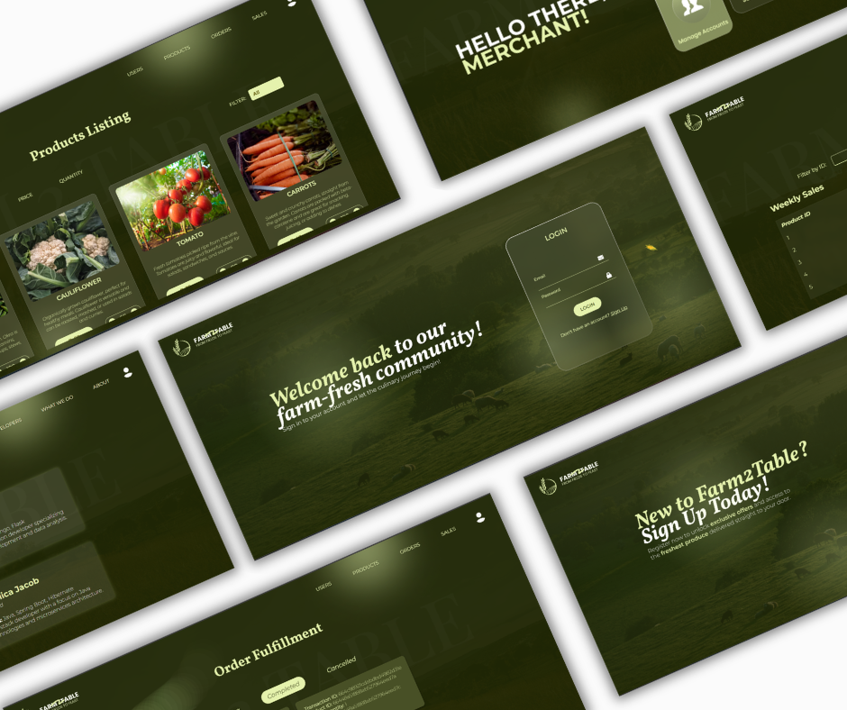
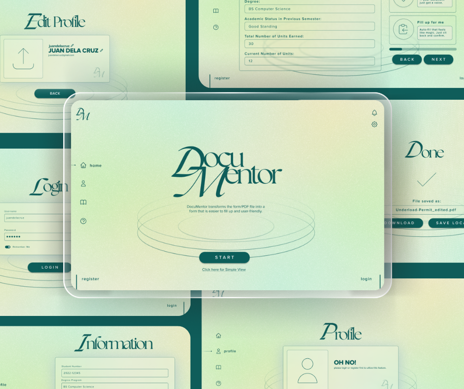

UI/UX Designer · 3+ Years Experience
I translate complex user needs and business goals into clear, intuitive digital experiences — from research and wireframes through to high-fidelity delivery. Available remotely.
Selected Work
Each project reflects a full UX process — from understanding user problems to delivering tested, production-ready interfaces.

Led a team of 4 to design a mobile pharmacy app that simplifies complex medication ordering into intuitive, friction-free interactions for patients and pharmacy staff.

Designed and led front-end development for a responsive alumni management platform for the Institute of Computer Science, enabling networking, mentorship, and career tracking in one hub.

Designed a budget-aware meal planning web app for university students, surfacing local food options and generating personalized meal combinations within a given daily budget.

Designed both donor and organization-facing flows for a donation platform supporting QR-based tracking, scheduling, and real-time notifications — bridging the gap between givers and non-profits.

Led design and front-end for a dual-sided e-commerce platform connecting local farmers to consumers — including product browsing, cart, order management, and a merchant admin dashboard.

Designed a tool that scans complex PDF government forms and automatically converts them into simplified, guided, step-by-step interfaces — removing bureaucratic barriers for older adults and people with disabilities.
About me
I'm a UI/UX designer with 3+ years of experience turning ambiguous problems into clear, user-centered digital products. My background spans mobile apps, web platforms, and accessibility-focused tools — always grounded in real research and tested with real users.
I've led design teams, collaborated closely with developers, and managed projects from the first stakeholder interview through to shipped product. I'm comfortable working across the full product lifecycle — from discovery and wireframing to high-fidelity delivery and design system maintenance.
I'm looking to bring that same rigour and care to meaningful real-estate digital experiences — designing tools that help people make one of the biggest decisions of their lives with clarity and confidence.